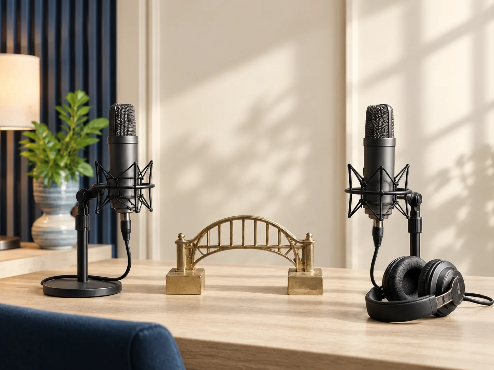

Auf dem Weg zum Buch.
Die Brücke führt zu Gedanken, die im Alltag weiterhelfen. Die Fahrt folgt Deinem Scrollen; der Buchbereich ist auch direkt erreichbar.
Zum Buchbereich
Das Buch.
Verstehen. Reflektieren. Handeln.
24 Metaphern eröffnen neue Perspektiven auf Führung, Druck und Veränderung. Hier beginnt der Einblick; die Geschichten und Reflexionsfragen gehören ins Buch.
Angekündigt für November 2026 · GOLD Verlag
Weiter zum Podcast.
Die Brücke öffnet den Blick auf Gespräche über Menschen, Ideen und Verbindungen.
Zum PodcastbereichDie Brückenbauerin.
Menschen. Ideen. Verbindungen.
Im angekündigten Podcast spricht Claudia mit Menschen, die Brücken bauen. Die ersten Folgen und Plattformlinks folgen, wenn sie tatsächlich veröffentlicht sind.
Start für November 2026 angekündigt
Podcast ansehen
Wo führt Deine Brücke hin?
Diese Probe zeigt zwei Haltepunkte. Alle weiteren Inhalte finden Sie auf der Startseite.
Zur Startseite